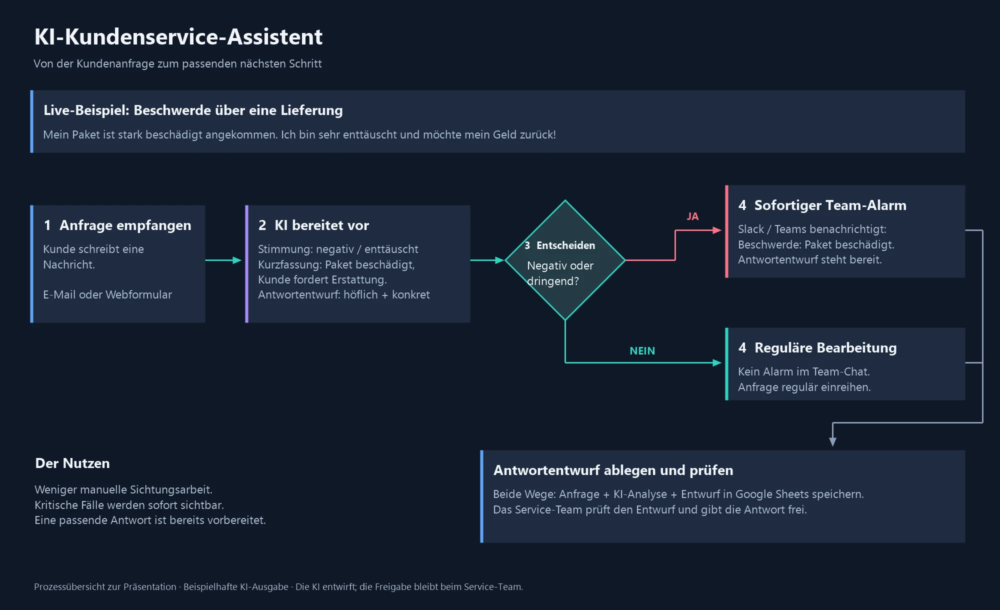

Vom Kundenärger zur vorbereiteten Antwort
KI-Kundenservice-Assistent · gebaut mit n8n
Im Kundenservice kostet jede Anfrage Zeit: Jemand liest sie, erkennt die Beschwerde, informiert das Team und formuliert eine Antwort. Dieser Assistent bereitet genau diese Arbeit vor. Kritische Fälle werden sofort sichtbar, und zu jeder Anfrage liegt ein Antwortentwurf bereit. Entscheiden und versenden bleibt beim Team.
Der Ablauf in 50 Sekunden
Illustrative Animation mit fiktiven Daten und beispielhaften KI-Ausgaben. Es ist kein aufgezeichneter Live-Lauf.
So funktioniert es
- Anfrage empfangen. Der Kunde schreibt wie gewohnt und wählt keine Kategorie. Im Beispiel kommt die Anfrage über einen Webhook an. Ein E-Mail-Eingang lässt sich mit demselben Aufbau anschließen.
- KI bereitet vor. Sie liest den Text und liefert strukturiert: Stimmung (negativ, neutral, positiv), Dringlichkeit (normal, hoch), eine Zusammenfassung, einen Antwortentwurf und die Begründung.
- Eine feste Regel entscheidet. Ist die Stimmung negativ oder die Dringlichkeit hoch? Die Regel ist einfach und nachvollziehbar.
- Ja: sofortiger Team-Alarm. Das Team erhält in Slack die Zusammenfassung und den Entwurf. Nein: reguläre Bearbeitung ohne Alarm.
- Entwurf ablegen und prüfen. Beide Wege speichern Anfrage, Analyse und Entwurf in einer Google-Tabelle mit dem Status „Zur Freigabe“. Das Service-Team prüft den Entwurf und versendet die Antwort selbst.

Wer entscheidet was
Die KI liest und formuliert. Sie entscheidet nicht über Erstattungen und versendet nichts. Der Auftrag an das Modell verlangt höfliche, konkrete Entwürfe ohne erfundene Zusagen, und der Kundentext gilt als Material, nicht als Anweisung. Das Ergebnis wird zusätzlich im Ablauf geprüft: erlaubte Einstufungen, Pflichttexte und Längen.
Fehler werden nicht als Erfolg gemeldet. Ungültige Eingaben und Ausfälle der KI führen zu einem klaren Status und lösen keine Folgeaktion aus. Scheitert die Tabelle, bleibt der Entwurf erhalten.
Technik
- n8n steuert den Ablauf.
- OpenAI-Modell mit strukturierter JSON-Ausgabe für die Bewertung und den Entwurf. Die KI bekommt Betreff, Nachricht und Namen. Die E-Mail-Adresse geht nicht als eigenes Feld an die KI.
- Slack für den Alarm, Google Sheets für Entwurf und Status.
Stand und Grenzen
Die Ablauflogik habe ich mit 24 Prüfgruppen und simulierten Antworten getestet: Aufbau und Verbindungen, vier Beispielanfragen, ungültige Eingaben, Fehlerfälle und Speicherung. Ein Live-Test mit echten Zugängen zu OpenAI, Slack und Google Sheets steht noch aus, ebenso die Messung von Qualität und Laufzeit eines echten Modells. Die Einstufung erfolgt durch das Modell und kann je nach Formulierung variieren. Alle Daten im Beispiel sind fiktiv.